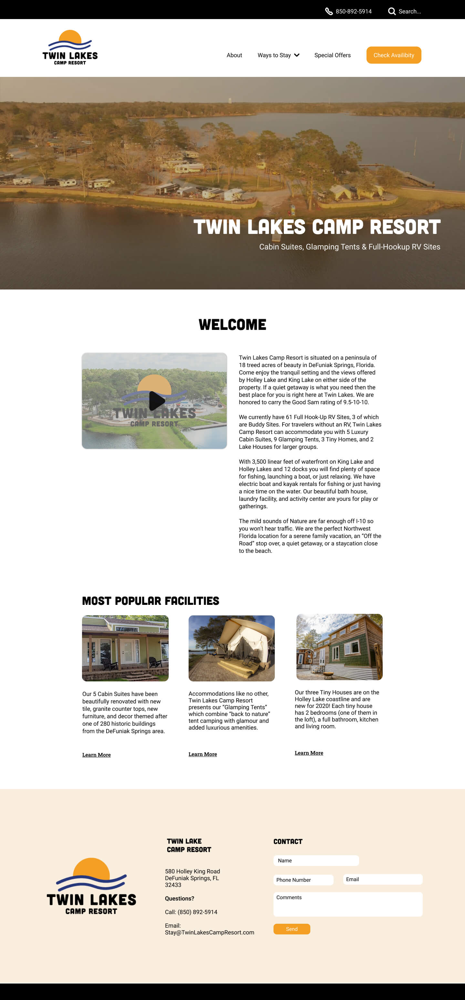
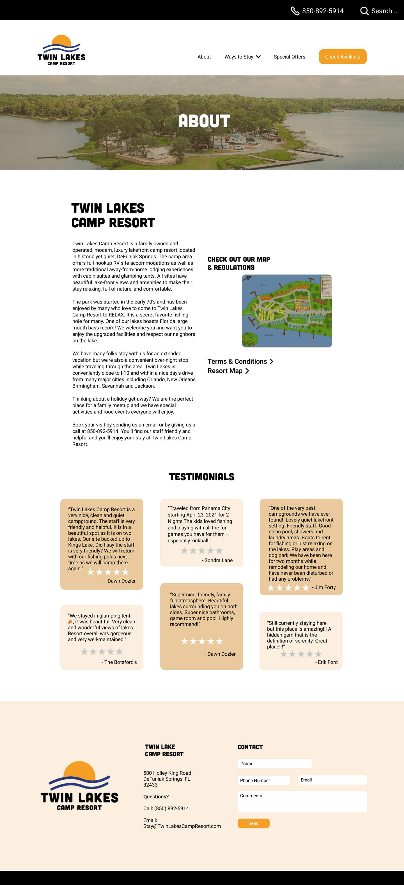
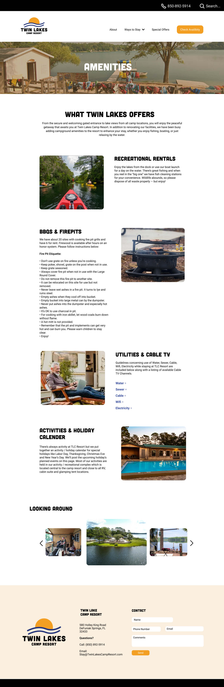
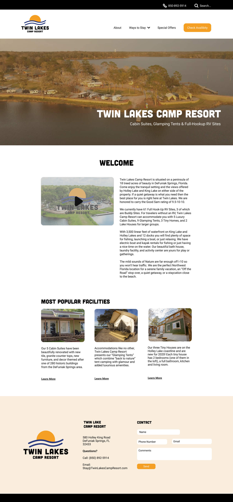
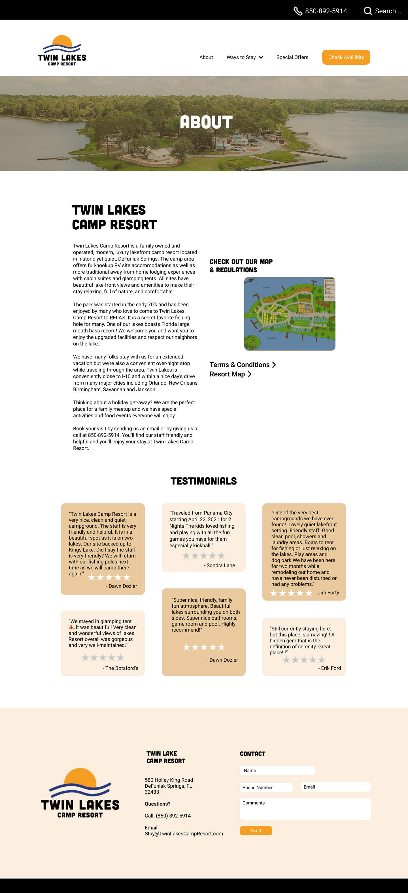
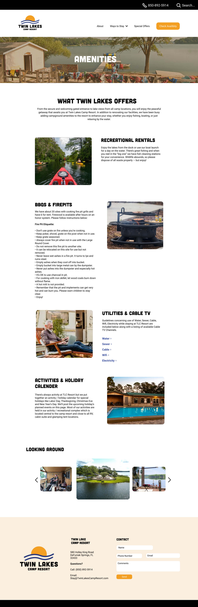
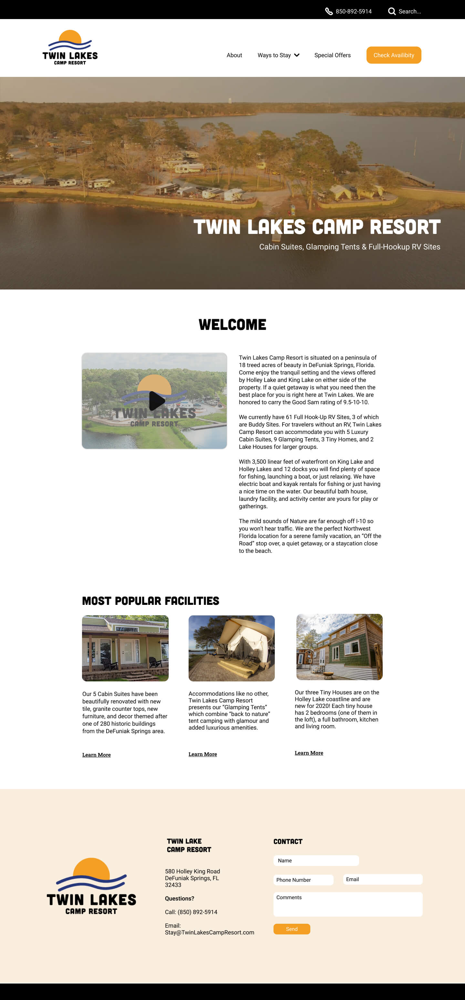
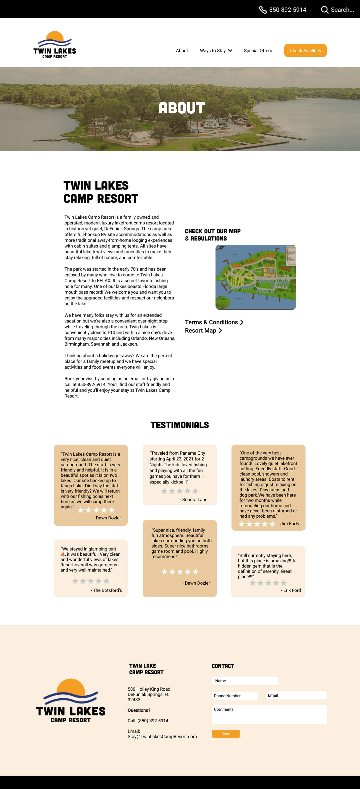
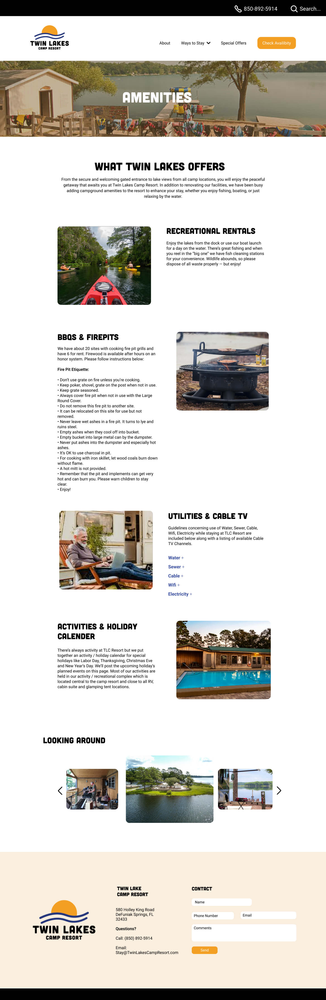

Twin Lakes Camp Resort - Website Redesign Concept
Twin Lakes Camp Resort is Lakeside camping and rv resort in the panhandle of Florida. They were seeking an updated website and logo that could resonate with newer clients and be more user friendly. Over much thought, I decided to keep the website simple and easy to read and go with the same color palatte as before. This concept was brought on by a project from my Web Page Design course. Classmates and I were intstructed to recreate the homepage, about page, and amenities page that needed a full workup from the original website.
Services
- Logo Redesign
- Website Redesign
Skills
- Adobe Illustrator
- Figma
- Brand Research
- Market Research


